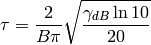

An energy normalized impulse can be defined as follows

with

where  is the bandwidth defined at and
is the bandwidth defined at and
 is the central frequency of the pulse.
is the central frequency of the pulse.
from pylayers.signal.bsignal import *
from pylayers.simul.simulem import *
from matplotlib.pylab import *
fc = 4
band = 2
thresh = 10
fe = 100
ip = EnImpulse([],fc,band,thresh,fe)
ip.plot()
show()
(Source code, png, hires.png, pdf)

Verification of energy normalization in both domains
In [1]: from pylayers.signal.bsignal import *
In [2]: ip = EnImpulse([],4,2,10,100)
In [3]: Et = sum(ip.y*ip.y)*ip.dx()
In [4]: print "Time integration",Et
Time integration 1.0
In [5]: P = ip.esd()
In [6]: Ef = sum(P.y)*P.dx()
In [7]: print "Frequency integration",Ef
Frequency integration 1.0
Calcul of UWB channel impulse response
A simulation file contains the description of an applied waveform.
In [8]: from pylayers.simul.simulem import *
In [9]: from matplotlib.pylab import *
In [10]: S = Simul()
/private/staff/n/en/buguen/Bureau/P1/ini/radiotx.ini loadini
defant.vsh3
/private/staff/n/en/buguen/Bureau/P1/ant/defant.vsh3
/private/staff/n/en/buguen/Bureau/P1/ini/radiorx.ini loadini
defant.vsh3
/private/staff/n/en/buguen/Bureau/P1/ant/defant.vsh3
In [11]: S.load('where2.ini')
/private/staff/n/en/buguen/Bureau/P1/ini/radiotx.ini loadini
defant.vsh3
/private/staff/n/en/buguen/Bureau/P1/ant/defant.vsh3
/private/staff/n/en/buguen/Bureau/P1/ini/radiorx.ini loadini
defant.vsh3
/private/staff/n/en/buguen/Bureau/P1/ant/defant.vsh3
In [12]: st = S.wav.st
In [13]: sf = S.wav.sf
In [14]: S.wav.info()
tw : 30.0
band : 0.499
fc : 4.493
thresh : 3.0
fe : 50.0
Np : 1500.0
te : 0.02
type : generic
In [15]: st.plot()
Construction of the VectChannel
In [16]: vc = S.VC(1,1)
nray : 500
nfreq : 181
nb rayons dans .tauk : 500
nb rayons 2: 500
In [17]: vc.doadod()
(Source code, png, hires.png, pdf)
Construction of the ScalChannel
# The ScalChannel object contain all the information about the ray transfer function
S.tx.A.info()
sc.H.plot()
# The antenna can also been taken into account
alpha = 1./sqrt(30) sca = vc.vec2scalA(S.tx.A,S.rx.A,alpha) sca.H.plot()
# ## Calculate UWB Channel Impulse Response
cir = sc.applywavB(S.wav.sfg)
cir.plot()
CIR=cir.esd(mode=’unilateral’) CIR.plot()
# This is wrong # # $mathbf{Y} = mathbf{S} odot mathbf{W}$
# <codecell>
wgam = S.wav.sfg Y = sc.apply(wgam) tau = Y.tau0 #print ‘tau=’,tau ri = Y.ft1(500,1) UH = Y.symHz(500) uh = UH.ifft(1) UH.plot() plt.figure() uh.plot() #figure() #ip0.plot() #figure() #IP0 = ip0.fft() #IP0.plot()
ips = Y.ift(500,1) t = ips.x ip0 = TUsignal(t,ips.y[0,:])
plot(UH.x,real(UH.y[0,:]),UH.x,imag(UH.y[0,:])) U0 = FHsignal(UH.x,UH.y[0,:]) u0 = U0.ifft(1) u1 = ifft(U0.y) plt.figure() plot(uh.x,uh.y[0,:]*1000+3) S.wav.st.plot()
U0.plot()
# # Here is the problem # # For some reason the Hermitian symmetry forcing is not working here
U1=u0.fft() g = fft(u1) plot(abs(g)) plt.figure() s = fftshift(u1) plot(abs(g)) #plt.figure() #plot(uh.x,uh.y[0,:]) #plot(uh.x,s*50+0.003)
plot(abs(fft(s)),’r’) plot(abs(fft(uh.y[0,:])),’g’)
wgam.plot()
S.wav.sf.plot()
print uh.y[0,:]
plot(imag(s))
# Problem $s$ is not real
u0
plot(real(u0.y))
plot(imag(s))
U0.y
plot(real(U0.y))
U0.y[0]
U0.y[50]
U0.y[-50]
UH.y[0,2]
UH.y[0,-2]
N = len(UH.y)
v1 = UH.y[1:(N-1)/2.] v2 = UH.y[N:-1:(N-1)/2.]
len(v1)
len(v2)
UH.y[0,-1]
UH.y[0,1]
plot(real(UH.y[0,:])) plot(imag(UH.y[1,:]))

{kind=link}
{kind=link}
{kind=link}
{kind=link}
{kind=link}
{kind=link}
{kind=link}
{kind=link}